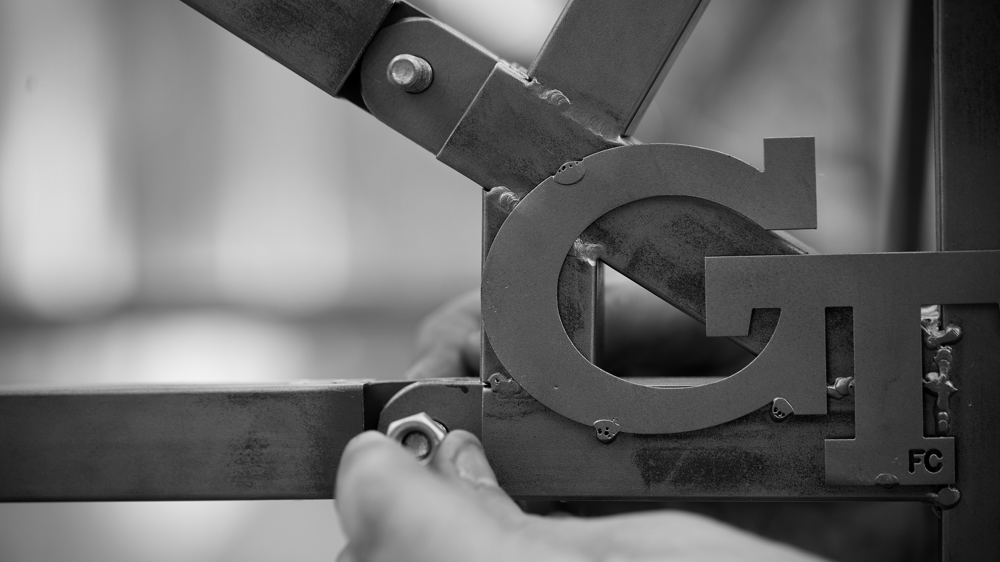
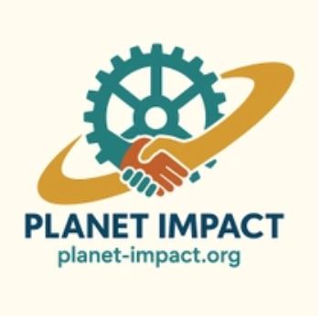

I'm an undergraduate student studying Mechanical Engineering at Georgia Tech. I enjoy finding problems and building physical solutions. I'm interested in product design and developing devices that impact the planet and people's daily lives.

Researched global challenges aligned with UN Sustainable Development Goals for a student-led organization developing sustainable, human-centered devices for specific communities; investigated existing solutions, adoption drivers and barriers, and target markets to identify and propose device concepts for development and prototyping.
Established objective KPIs for hair curl performance by translating subjective curl quality into six geometry-based metrics and developing an annotation application to measure them from tress images; validated measurement repeatability across technicians using Gage R&R and standardized application use through work instructions.
Designed and assembled a standardized curl-retention test rig for 15 hair tresses, establishing camera alignment, lighting, and styling procedures for repeatable testing.
Reviewed 50+ completed test results to verify key metrics such as coanda force, frizz and shine, and straightness and alignment for statistical accuracy before releasing data; performed one-way ANOVA in Minitab to assess and report statistical parity of key metrics between test results.
Built Python tools to deterministically extract core data from DQTP and DFMEA documents, converting inconsistent formats into organized datasets that enable historical traceability for future product testing and development.
Collaborated in a 2-person team to integrate a Raspberry Pi 5, machine vision system, and custom mechanical gripper with a UR5 robotic arm for industrial pick-and-place applications.
Utilized RoboFlow to label and train object detection model on 70+ images for test tube location and color identification.
Designed 3D-printed claw modification for existing gripper mechanism to improve object grasping performance.
Analyzed 2000+ customer reviews and troubleshooting calls to identify top product detractors and delighters across various home environment units; tracked week-over-week sentiment trends to inform product improvement priorities.
Performed hands-on teardowns and root cause analysis (RCA) on 50+ returned units to test and identify failures with PCBAs, motors, and other internal mechanisms; documented findings, testing methods, and corrective actions.
Conducted global cross-functional collaboration with engineering, manufacturing, marketing, product development, and customer experience teams to contribute to corrective actions with Six Sigma methods, including a rework to enhance RF signal strength between the remote and receiver on a key home environment product.
Tutored up to three students simultaneously across elementary through 10th-grade math, tailoring lesson plans to different learning styles and tracking progress through parent communication.